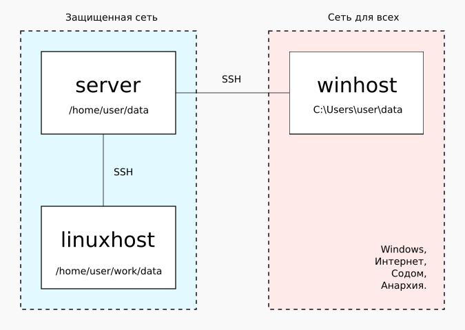
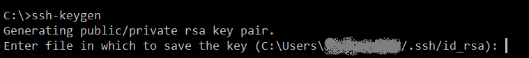

Схемы синхронизации каталогов бывают разными. Самая простая схема - это синхронизация каталогов на двух компьютерах. Но бывают и более экзотические схемы синхронизации, например если компьютеры с синхронизируемыми каталогами недоступны друг другу напрямую. В таком случае синхронизацию можно организовывать через промежуточный компьютер, на котором размещается синхронизируемый каталог с файлами, в который "прилетают" изменения с обеих сторон, и из которого "вытягиваются" изменения в обе стороны.
Почему для синхронизации не подходит rsync?
Rsync - это утилита резервного копирования. Она умеет делать полный дубликат директории-источника в директорию приемника. И такое простое поведение не подходит для организации процесса синхронизации в случае, если файлы в директории изменяются как на стороне источника, так и на стороне приемника. По-сути, при применении rsync, все изменения в файлах приемника просто перезатрутся содержимым файла источника, если файлы будут различаться.
Поэтому для организации настоящего процесса синхронизации нужно пользоваться другим классом программ, которые специально предназначены для .
Что такое утилита Unison
Unison - это замечательная кроссплатформенная утилита, предназначенная для двусторонней синхронизации директорий. Она написана на языке ocalm. Так как язык в некоторой степени экзотичен, авторы выкладывают статические сборки на странице проекта на GitHub:
https://github.com/bcpierce00/unison/releases
Там можно подобрать версию, подходящую для различных дистрибутивов Linux, имеющих различные версии ядер и библиотеки LIBC. Этой утилитой можно пользоваться как в консоли, так и через GTK-интерфейс, поставляемый в виде дополнительного бинарника. Помимо Linux-платформ, утилита unison имеет статические сборки для Windows и MacOs.
В процессе работы утилита unison создает в пользовательской директории каталог с названием ".unison", в котором скапливается информация о состоянии файлов в директориях, которые участвуют в синхронизации. По-сути, unison запоминает информацию о том, в каком состоянии файл был, и в случае его изменения на любой стороне синхронизации, копирует в нужную сторону состояние именно измененного файла. Для процесса передачи содержимого файлов unison использует механизм утилиты rsync, как наиболее быстродействующий из открытых реализаций процесса копирования файлов.
Далее будет рассматриваться настройка консольного варианта. Настройка в консоли наиболее кроссплатформенна и поддерживает весь набор возможностей этой программы.
Синхронизация двух компьютеров через третий
Чтобы говорить предметно, далее будет описана схема синхронизации директорий, расположенных на двух разных компьютерах, через третий, промежуточный. На самом деле, ничего не мешает настроить синхронизацию просто между двумя компьютерами: на первом запускается синхронизация со вторым, на втором - с первым. Однако здесь рассматривается более сложный случай. Как он может возникнуть?
Имеется сеть предприятия, в которой выделены два напрямую несвязанных между собой сегмента сети: "защищенный" и "для всех". В "защищенной" сети имеется хост с Linux. В "сети для всех" имеется хост с Windows. Между сетями находится Linux-сервер, на который имеется доступ в качестве непривелегированного пользователя по протоколу SSH. К этому серверу можно коннектиться как в защищенной сети, так и из "сети для всех". Размещение компьютеров выглядит примерно так:

Задача: получить синхронизацию файлового каталога между linuxhost и winhost. Сложность в том, что server находится не под нашим контролем, мы просто пользователи, имеющие SSH-доступ на server, и не более того. А это значит, что установить нужное дополнительное системное ПО на сервер (тот же unison) не представляется возможным.
Тем не менее, даже в таких условиях сделать синхронизацию через unison возможно.
Настройка server
Мы не является администраторами server, но можем произвести нужные настройки у себя в каталоге пользователя. Для правильной работы unison необходимо, чтобы он был установлен на обоих компьютерах, участвующих в синхронизации. В нашем случае синхронизируются пары server-winhost и server-linuxhost. А это значит, что на всех трех компьютерах должен быть установлен unison.
Хорошая новость в том, что, как было сказано выше, сборки unison распространяются статически, и могут быть запущены из любого каталога операционной системы.
Для настройки сервера, надо залить в каталог пользователя статический дистрибутив unison и проверить как он работает. Заливку можно сделать из Linux с помощью Midnight Commander через пункт меню "Shell-соединение". Заливку из Windows можно сделать через утилиту WinSCP. В любом случае, после заливки надо войти своим пользователем на сервер через SSH и проверить как выполняется unison. Например, если дистрибутив unison был залит в каталог:
/home/user/portableSoft/unison
... то для проверки можно запустить команду:
/home/user/portableSoft/unison/bin/unison -help
Если команда выполнилась без ошибок, небыло сообщений о неподходящей версии ядра или неподдерживаемой версии LIBC, то настройку можно продолжать дальше. Если же unison не запустился, надо подобрать версию дистрибутива этой утилиты. Возможно, что надо попробовать более старую. Как было сказано выше, авторы делают официальные сборки и в более старых окружениях.
На этом настройка server закончена.
Настройка winhost
Вначале лучше заняться настройкой Windows-машины, потому что соединение linux-linux сделать достаточно просто, а вот с windows-linux придется поковыряться.
Настройка ключей SSH
Для начала в Windows нужно установить пакет OpenSSH. Он необходим, чтобы соединение winhost-server устанавливалось с помощью ключей шифрования, и не требовало ввода логина-пароля. Автор статьи устанавливает OpenSSH вместе с Git for Windows, так как OpenSSH сразу идет в комплекте с этой системой контроля версий. Но можно поставить OpenSSH и отдельно по следующей ссылке:
https://remoteshaman.com/project/openssh-for-windows
В любом случае после установки OpenSSH необходимо убедиться, что исполнимые файлы типа ssh.exe и ssh-keygen.exe были доступны на исполнение. Для этого в переменную PATH пользователя (или в системный PATH) должен быть прописан путь до директории, в которой расположены эти исполняемые файлы.
Далее необходимо сгенерировать пару открытого и закрытого ключа. Для этого необходимо запустить утилиту ssh-keygen:

На все запросы, в том числе на запрос ввести passphrase, надо нажимать Enter. В результате в каталоге пользователя будет создан каталог /.ssh, в котором будет лежать два файла: id_rsa и id_rsa.pub. Это закрытый и открытый ключи шифрования SSH-сессии.
Публичный ключ надо прописать на server в файл /home/user/.ssh/authorized_keys. Если этого файла нет, его можно создать. Публичный ключ пlinkedinользователя прописывается в виде одной строки в данном файле. Либо же можно воспользоваться утилитой ssh-copy-id , если таковая присутствует в системе:
> ssh-copy-id user@server
После этого надо проверить вход на сервер без пароля:
> ssh user@server
Если вход произведен, и видно приглашение командной строки Linux, то дальнейшая настройка должна пройти без каких-либо проблем. Для выхода из удаленной консоли можно дать команду exit.
Настройка unison в Windows
Для работы unison необходимо, чтобы дистрибутив этой утилиты был установлен в Windows. Далее предполагается, что unison установлен в каталог C:\tools\unison, а исполнимый файл unison находится по пути C:\tools\unison\bin\unison.exe.
Для запуска синхронизации используется команда, которую можно прописать в bat-файл:
C:\tools\unison\bin\unison.exe C:\Users\user\data ^
ssh://user@server//home/user ^
-ignore="Path .git/*" ^
-ignore="Regex ^\.git.*" ^
-servercmd="/home/user/portableSoft/unison/bin/unison" ^
-auto -batch -terse
В первом параметре команды указывается каталог, который должен быть засинхронизирован.
Во втором параметре команды указывается каталог на удаленном сервере, в котором будет размещаться копия данных. Следует обратить внимание, что в этом пути не указывается непосредственно конечный каталог синхронизации. То есть, не пишется /home/user/data, а пишется просто /home/user. Тем не менее, так как в первом параметре указан каталог-источник data, то конечный каталог на удаленном сервере получится /home/user/data.
Следующие две опции показывают, как исключить файлы и каталоги, которые не должны попадать в синхронизируемые данные. В данном случае отключается синхронизация подкаталога \.git и всего его содержимого.
Следующая опция -servercmd показывает, какая команда на удаленном сервере будет использоваться для запуска утилиты unison на удаленном сервере. Именно эта опция и позволяет использовать не системную утилиту unison (которой может и не быть в системе), а утилиту, установленную в пользовательский каталог.
Завершающие опции нужны для того, чтобы unison делал синхронизацию не задавая лишних вопросов. Однако следует учесть, что первый запуск unison будет сопровождаться различными вопросами, независимо от наличия данных опций.
Если все сделано правильно, то на server появится полная копия каталога C:\Users\user\data.
После этого можно будет менять как файлы на server, так файлы и на winhost, и после запуска вышеприведенной команды эти изменения будут применяться на соответствующей стороне. При этом, запускать unison надо только на winhost.
Настройка linuxhost
Настройку linuxhost провести гораздо проще, чем компьютер с Windows, потому что все сетевые SSH-утилиты обычно заранее присутствуют в Linux-системе.
Настройка ключей SSH
Настройка ключей SSH производится стандартным для Linux способом. Вначале через ssh-keygen создается пара ключей для текущего пользователя. Затем через утилиту ssh-copy-id публичный ключ прописывается на server. Через утилиту ssh проверяется вход на server, он должен будет произвестись без пароля.
Настройка unison на linuxhost
Утилита unison устанавливается на linuxhost точно так же как и на server. Предполагается, что на linuxhost утилита unison установлена в каталог /opt/unison. Далее, для удобства, создается исполнимый sh-файл со следующими командами:
#!/bin/bash
/opt/unison/bin/unison /home/user/work/data \
ssh://user@server//home/user \
-ignore="Path .git/*" \
-ignore="Regex ^\.git.*" \
-servercmd="/home/user/portableSoft/unison/bin/unison" \
-auto -batch -terse
exit 0
По сути, здесь используются абсолютно те же опции, которые применялись на winhost, только путь к синхронизируемому каталогу на linuxhost другой.
Здесь следует обратить внимание на команду exit 0. Она нужна потому, что unison в Linux по какой-то причине генерирует код ошибки в случае, если были обнаружены изменения в файлах. Если данный bash-скрипт планируется использовать в составе другого ПО, которое обрабатывает коды ошибок и показывает предупреждения в случае ненулевого кода выхода, то лучше принудительно устанавливать нуливой код ошибки, так как изменения в файлах - это нормальное состояние системы синхронизации.
Разрешение конфликтов
Если данными в синхронизируемом каталоге управляет один человек, а периодичность запуска команды синхронизации меньше времени, за которое человек успевает перейти с "рабочего места 1" на "рабочее место 2", то никаких конфликтов синхронизации возникнуть не может при условии, что сеть работает стабильно. Но в реальной жизни соблюдать такие идеальные условия не всегда возможно. И кроме того, существуют задачи, когда разные люди или программы работают с одним и тем же каталогом, синхронизирующемся через Unison.
Поэтому может возникнуть ситуация, когда один и тот же файл был по-разному изменен одновременно и на одном и на втором рабочем месте, и только потом запущена синхронизация. Что в этом случае будет делать Unison? Если в опциях присутствует опция -auto (что эквивалентно -auto=true), то конфликтующие файлы будут пропущены. И для этих файлов, по-сути, никакой синхронизации не произойдет. И это явно не то поведение, которое ожидается от системы синхронизации файловых каталогов.
Если убрать опцию -auto, то в случае обнаружения конфликта, будет запущен консольный диалог выбора, какой вариант файла нужно считать правильным. Такое поведение тоже не подходит для синхронизации, которая, например, периодически запускается в виде фонового процесса.
Для решения вопроса о том, как синхронизировать конфликтующие файлы, в Unison сделана опция -prefer (предпочтение). Значения этой опции могут быть следующими:
В случае с синхронизацией через промежуточный хост, правильней всего работает стратегия отдавать предпочтение изменениям, полученным с этого промежуточного хоста. То есть, промежуточный хост считается своеобразным "центральным сервером" который собирает изменения с синхронизируемых каталогов, и после того как он изменения принял, они должны быть обязательно доставлены в остальные синхронизируемые каталоги.
Поэтому, в случае схемы синхронизации двух хостов через промежуточный, в опции предпочтения должен быть указан путь к удаленному каталогу и на winhost, и на linuxhost:
-prefer=ssh://user@server//home/user
Примечание: помимо опции -prefer, в Unison есть похожая опция -force, у которой возможные значения либо имя пользователя, либо newer / older. (Что будет происходить, если в системе присутствуют пользователи с именами newer или older - непонятно). В любом случае, при использовании значений newer или older, действие опции -force аналогично действию -prefer, но чтобы -force сработало, необходимо наличие опции -times. Поэтому, если понадобится указывать предпочтение более нового или более старого файла, проще воспользоваться -prefer опцией.
Завершающие действия
Далее можно прописать вызовы вышеуказанных скриптов на winhost и на linuxhost в систему запуска программ по расписанию, установить необходимый период синхронизации, и получится три идентичных копии каталога на компьютерах winhost, linuxhost и server. По сути, получается система трехточечной синхронизации: любое изменение в каталоге синхронизации на любом компьютере будет перекидываться на другие. И для организации такой синхронизирующейся системы не требуются даже административные права.